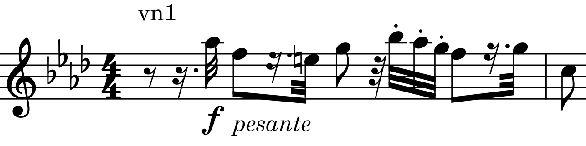
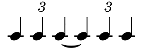

ダルベール: 弦楽四重奏曲第2番
再びドイツに戻って、ヨアヒム没後のベルリン音楽界で一定の影響力を持っていたといわれるオイゲン・ダルベールを取り上げる。リストの弟子で大ピアニストのイメージが強い。だがそれは伝え聞く話の中だけのことで、最盛期を過ぎた後に残された録音の印象はあまり良いものではなく、もっぱらバッハの『パッサカリアとフーガ』のピアノ編曲で馴染みが深かった（とはいえ、それもイーゴリ・ジューコフによる編曲・自演の方が好みだが）。作曲家としてピアノ協奏曲などを作っているのも、ピアニストとしての活動の延長という程度に思っていた。ところがさにあらず、実際には若い頃から作曲家を目指し20作以上のオペラまで書いていたとのこと。室内楽曲は少ない。中で、ほぼ30歳頃の作品である『弦楽四重奏曲第2番』が気に入った。
Eugen d'Albert: String Quartet No. 2
in E-Flat Major, Op. 11
Sarastro String Quartet
(1996)
全体的に手は込んでいるものの楽想は明るく親しみやすい。第1楽章ではそろそろ再現部というところで第1主題が平行調のハ短調で奏される（"appassionato"と指示がある）。ここはなかなか良い。第3楽章はテーマや構成がブルックナーの交響曲風に聴こえる。献呈されたブラームスはどう思っただろうか。中間部に短くて激しい印象的なフレーズ（下記）が出てくるのだが、CPOから出ている別の演奏(Reinhold Q)ではこの部分が上の倍近い速度で弾かれておりびっくりする。

どちらも説得力はあるのだが、"pesante"の指示に忠実なのはSarastro SQの方かと思う。それに、この後長いアッチェランドが続くので、Reinhold Qの速度は速くなりすぎるかもしれない。基本のテンポを速めに取ってだれないようにした配慮だろうか。ちなみに楽譜の指示は"Adagio ma non troppo"である。Rheihold Qの演奏はこちら（そういえば以前に取り上げたライネッケの弦楽四重奏曲もこの団体の演奏だった）：
Eugen d'Albert: String Quartet No. 2
in E-Flat Major, Op. 11
Reinhold Quartet
(2015)
ヨアヒムに献呈された『第1番』も聴かせる（第3楽章など非常に魅力的）が、『第2番』が流麗にまとまっているのに対してやや力みがある気がする。第1楽章の冒頭、というリズム上で不安定に奏される主題は忘れ難い雰囲気を持っている。ちょっと英国TVドラマ『シャーロック・ホームズの冒険』のテーマ曲（ケネス・シリトーが弾いていた）を思い出させる。ダルベールはスコットランド生まれであり最初ロンドンでサリヴァンらについて作曲を学んだものの、霧深い祖国を嫌ってドイツに帰化している(*1)。後世の曲とはいえ皮肉なことだ。
-
イギリスに対する否定的感情を何度か公にしていたが、後に取り消すような発言も行ったという話がある。"Eugene D'Albert: A Biographical Sketch", The Musical Times, 1904-11-01, Vol. 45, Iss. 741
(May 4, 2024)